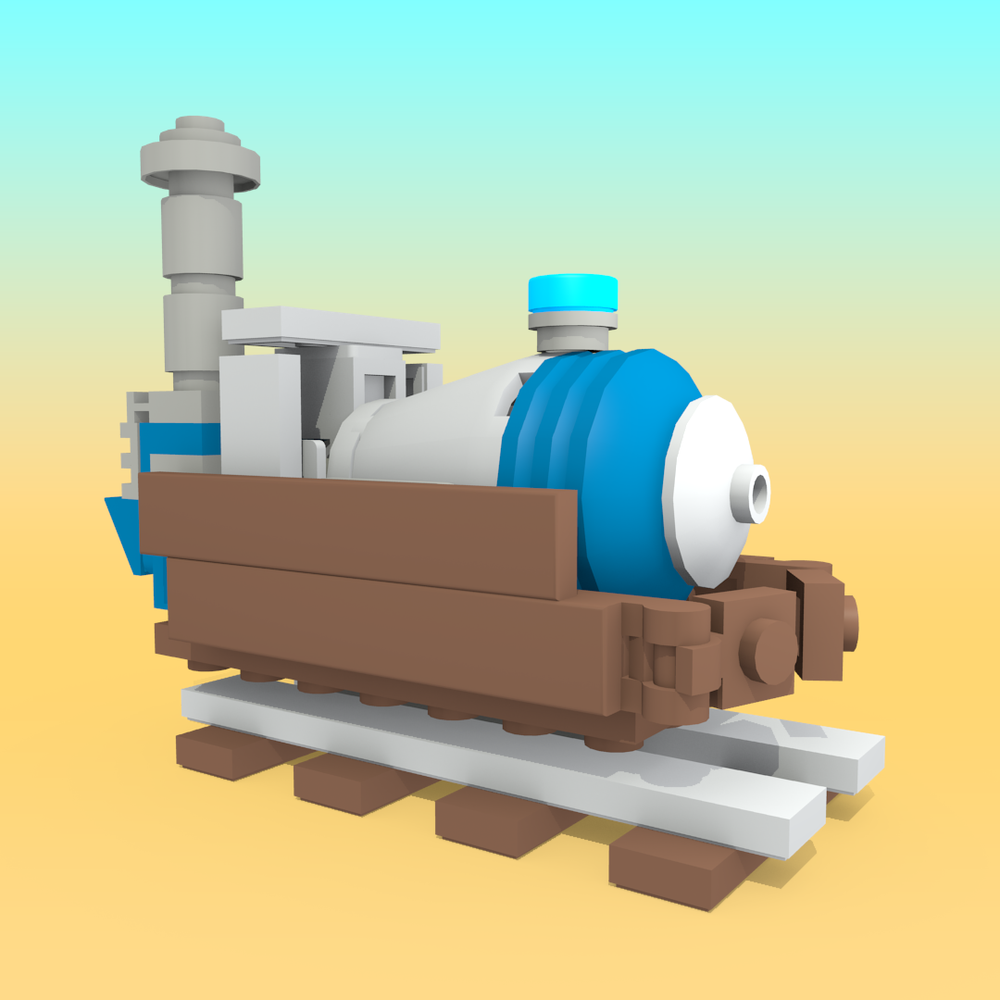

What is ResSwitch?
Buy RenderRig on:
BlenderMarket, Gumroad, Artstation
JohnGDDR5 on:
Youtube, Twitter, Artstation
Commands
MLG
BRUH
MLG
BRUH
MLG
BRUH
Commands
mkdocs new [dir-name]- Create a new project.mkdocs serve- Start the live-reloading docs server.mkdocs build- Build the documentation site.mkdocs help- Print this help message.
boi
*BOI*

 bruh
bruh

Project layout
mkdocs.yml # The configuration file.
docs/
index.md # The documentation homepage.
... # Other markdown pages, images and other files.